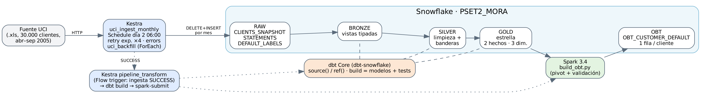
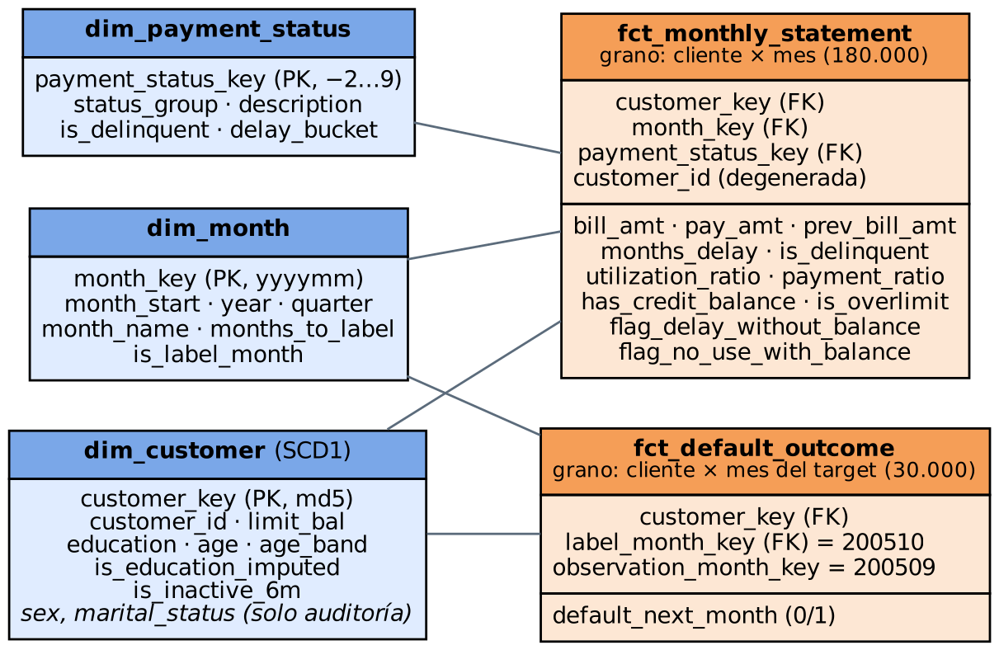
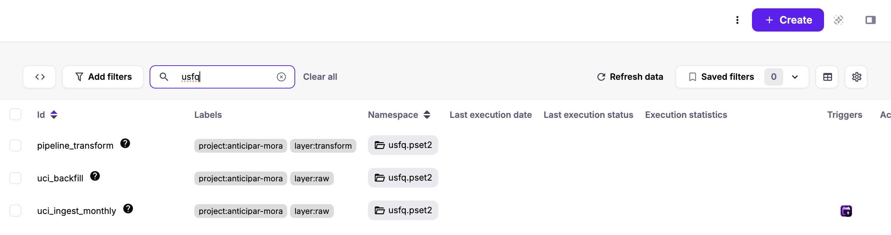
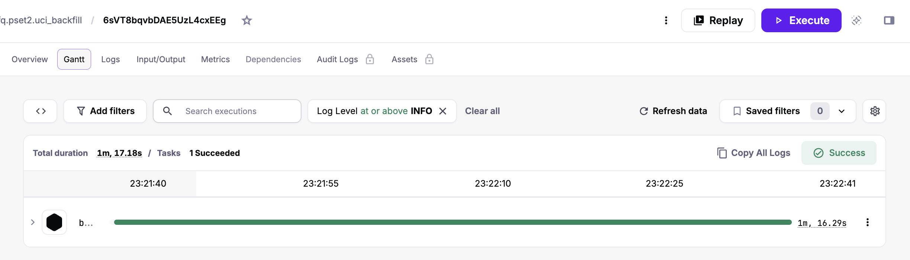
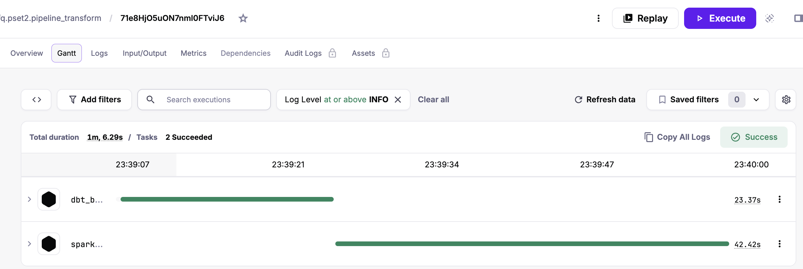
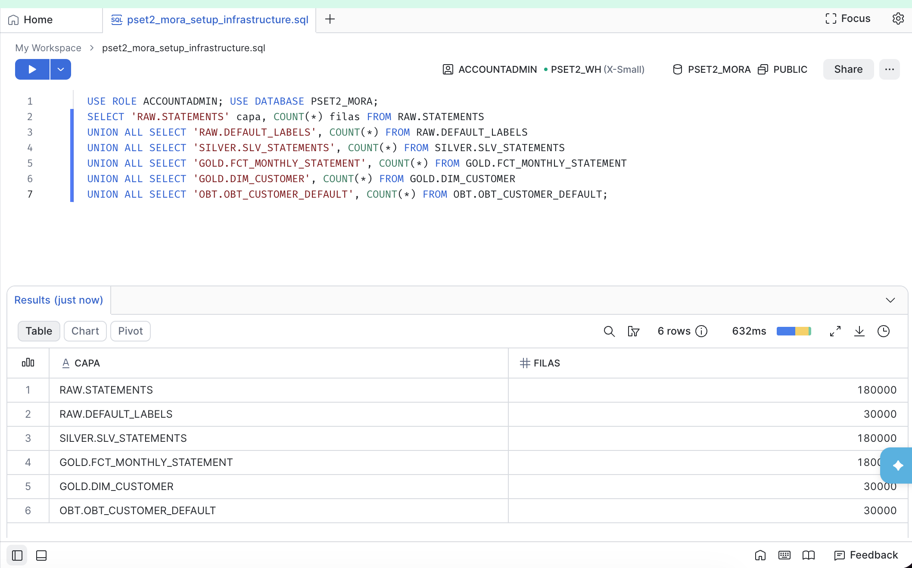

Este documento describe el pipeline que alimenta el proyecto del PSet 1: predecir, con un mes de anticipación, qué clientes de tarjeta de crédito no pagarán su próxima cuota. La unidad de predicción es el cliente observado al cierre de septiembre de 2005, y el target es el impago de octubre de 2005. Todo el diseño apunta a producir esa tabla sin fuga de datos y con decisiones de limpieza trazables.

Figura 1. Infraestructura implementada. La parte local se levanta con docker-compose.yml: Kestra con Postgres, Spark master y worker, y dbt. El almacenamiento es Snowflake.
Flujo de datos. Kestra descarga la fuente y carga una partición mensual en RAW. Una hora después (07:00 del día 2), o a mano tras el backfill, pipeline_transform ejecuta dbt build. dbt construye en orden BRONZE (vistas tipadas), SILVER (limpieza) y GOLD (estrella) y corre los tests. Si los tests pasan, Spark lee Gold, arma la OBT, valida los joins y la escribe en el esquema OBT. Si un test falla, Spark no corre, así que nunca se construye una OBT sobre datos que no pasaron calidad.
Decisiones. (1) Raw separado de Bronze: Raw guarda lo que llegó, con _INGESTED_AT, _EXECUTION_ID y _SOURCE_URL, para poder auditar y re-procesar sin volver a descargar. (2) Las transformaciones se ejecutan dentro de Snowflake (ELT) con dbt, que ordena las dependencias mediante source() y ref(). (3) Spark se usa solo donde aporta: el pivot cliente × mes y las validaciones. (4) Las credenciales viven en .env y en los secretos de Kestra (SECRET_*), nunca en el repositorio.
| Aspecto | Implementación |
|---|---|
| Fuente | UCI Default of Credit Card Clients: un archivo .xls público con 30.000 clientes y 25 columnas. Contiene seis meses de historia (abr–sep 2005) en formato ancho (PAY_0..6, BILL_AMT1..6, PAY_AMT1..6) y el target. |
| Granularidad | Cliente × mes de estado de cuenta. Cada ejecución carga una partición mensual, simulando el corte que entregaría el core de tarjetas. Para el mes 2005-09 se toman PAY_0, BILL_AMT1 y PAY_AMT1, y así sucesivamente hasta 2005-04. Los valores no se alteran; solo se selecciona la columna del mes. |
| Tablas Raw | STATEMENTS (180.000 filas), CLIENTS_SNAPSHOT (180.000, una copia de los atributos por cada mes cargado) y DEFAULT_LABELS (30.000). Las etiquetas solo se cargan con la partición 2005-09, porque el impago de octubre recién se conoce después de ese cierre. Así Raw ya respeta la línea temporal. |
| Trigger y frecuencia | Schedule 0 6 2 * * (America/Guayaquil): el día 2 de cada mes a las 06:00 se carga el mes anterior (trigger.date − 1 mes). La frecuencia sigue al proceso de negocio: el estado de cuenta se cierra una vez al mes y cobranza arma su lista a inicios de mes. concurrency: limit 1 evita dos cargas simultáneas. |
| Proceso de carga | Kestra corre la imagen del proyecto pset2-ingesta:1.0 (Dockerfile del repo, Docker runner con pullPolicy: NEVER), que ejecuta ingest_uci.py: descarga, valida el esquema (columnas esperadas, 30.000 filas, IDs únicos), extrae la partición y la carga con write_pandas. La carga es idempotente: DELETE de la partición + INSERT dentro de una transacción. Un reintento o un backfill repetido no duplica filas; lo verificamos recargando 2005-09 dos veces y obtuvimos 180.000 filas, no 210.000. |
| Errores y retries | retry: exponential con 4 intentos (30 s → 1 m → 2 m → 4 m, tope de 10 min y 1 h en total) porque la fuente (servidor de UCI) falla por caídas de minutos, no de segundos, y Snowflake tarda en reanudar el warehouse suspendido; un reintento inmediato chocaría con la misma caída. timeout de 20 min. El bloque errors registra la partición y el execution.id. Como la carga es transaccional, una falla deja la partición previa intacta. Un cambio de esquema de la fuente aborta con un error explícito: reintentarlo no lo arreglaría. |
| Backfill | El flujo uci_backfill recibe la lista de meses (por defecto 2005-04 a 2005-09) y los carga en orden cronológico con la misma imagen y script de la ingesta mensual, deteniéndose en el primer mes que falle; tiene el mismo retry exponencial y concurrency: limit 1. Si un mes falla, el backfill falla e indica cuál fue. También se puede recargar un solo mes pasando el input statement_month. |
El perfilado se hizo sobre los 30.000 clientes y los 180.000 estados de cuenta, antes de transformar. Completitud: 0 nulos en las 25 columnas (750.000 celdas), así que el problema no es la ausencia de datos sino su codificación y consistencia. Validez de rangos: edad entre 21 y 79, cupo entre 10.000 y 1.000.000 NT$, pagos ≥ 0 (todo correcto). El target tiene una tasa de impago del 22,12%. Toda la limpieza está implementada en Silver con dbt.
| Problema (dimensión) | Evidencia | Acción | Justificación |
|---|---|---|---|
| Atributos de cliente repetidos (unicidad) | Raw tiene 180.000 filas de CLIENTS_SNAPSHOT para 30.000 IDs (6 copias por cliente, una por mes cargado). | Conservar el snapshot más reciente por ID (row_number por snapshot_month e _ingested_at descendentes). | Es la última versión conocida del cliente al momento de predecir (SCD1). El test row_count_equals_model garantiza que no se pierde ningún cliente. |
| EDUCATION fuera del catálogo (validez) | 345 clientes (1,15%) con códigos 0, 5 o 6, que no están documentados en la fuente. | Reasignar al código 4, "Otros/Desconocido", conservar el valor original y marcar is_education_imputed. | Ninguno de esos códigos tiene significado propio y el volumen es bajo. Eliminarlos sesgaría la muestra: su tasa de impago es de 7,5%, frente a 22,1% en el total. |
| MARRIAGE = 0 (validez) | 54 clientes (0,18%). | Reasignar a 3, "Otro", con bandera. | Mismo criterio. Además, la variable queda fuera de la OBT por equidad (decisión del PSet 1). |
| PAY_STATUS −2 y 0 no documentados (validez) | 13,6% de los estados de cuenta tienen −2 y 53,3% tienen 0; la documentación oficial solo define −1 y 1..9. | No imputar. Se interpretan según las aclaraciones del autor (−2 = sin consumo, 0 = pago mínimo) y se derivan months_delay = max(pay_status, 0) e is_delinquent. | Son dos tercios de los datos y llevan información (estar en crédito rotativo no es lo mismo que estar al día). Convertirlos en "al día" o en nulos destruiría esa señal. |
| Codificación inconsistente entre meses (consistencia) | El valor PAY_STATUS = 1 aparece 3.688 veces en sep-2005 y solo 28, 4, 2, 0 y 0 veces en ago–abr. | Conservar y documentar. Las features usan is_delinquent y months_delay, que no dependen de distinguir el 1. | Indica que la fuente cambió de codificación en el mes más reciente. No hay forma de reconstruir el valor verdadero; se registra como limitación. |
| Saldo negativo (precisión) | 3.932 estados de cuenta (2,18%) en 1.930 clientes (6,4%) con BILL_AMT < 0. | Conservar el valor y marcar has_credit_balance. | Es un saldo a favor (sobrepago), un estado válido en negocio. Truncarlo a 0 cambiaría la utilización y la relación de pago. |
| Saldo mayor al cupo (precisión) | 8.274 estados de cuenta (4,6%) en 3.931 clientes (13,1%); en 59 clientes el saldo supera 2 veces el cupo. | Conservar el valor y marcar is_overlimit / is_extreme_overlimit; la utilización se calcula sin tope. | Intereses y cargos pueden superar el cupo, y el sobregiro es una señal de riesgo que el modelo debe ver. No hay evidencia de que sea un error de captura. |
| Estado de pago vs. saldo (consistencia) | 2.068 meses (1,15%) con atraso ≥ 1 pero saldo ≤ 0, y 9.425 meses (5,2%) con "sin consumo" (−2) pero saldo > 0. | Conservar y marcar flag_delay_without_balance y flag_no_use_with_balance; en la OBT se resumen en n_inconsistent_months_6m. | No sabemos cuál de los dos campos es el erróneo. Marcarlos permite medir en el EDA si esos registros se comportan distinto, en lugar de decidir a ciegas. |
| Cuentas inactivas con impago (precisión del target) | 795 clientes (2,65%) con saldo y pago en 0 los seis meses; aun así, su tasa de impago es de 37,6%. | Conservar y marcar is_inactive_6m. | Es un posible ruido de etiqueta, pero también podría ser deuda fuera de la ventana. Se decidirá en el modelado con evidencia, no aquí. |
| Registros idénticos con distinto ID (unicidad) | 35 filas idénticas en las 24 variables (70 en grupos), de las cuales 60 son cuentas inactivas. | Conservar. | Los IDs son distintos y casi todos son cuentas sin movimiento, que naturalmente coinciden en ceros. No hay evidencia de duplicación técnica. |
| Relación de pago indefinida (completitud derivada) | payment_ratio es nulo en 49.439 meses (27,5%): 30.000 por ser el primer mes y 19.439 por tener saldo previo ≤ 0. | Dejar en nulo (no imputar con 0). | Dividir por un saldo ≤ 0 no tiene sentido. La imputación se decidirá en el pipeline de features. |
Bronze (vistas): copia 1:1 de Raw con tipos explícitos (numeric(14,2), date), nombres en snake_case y metadatos de carga. No aplica ninguna regla de negocio, de modo que cualquier decisión de limpieza se puede rehacer desde aquí. Silver (tablas): aplica la sección 3. Deduplica snapshots y particiones re-cargadas, recodifica categorías con banderas y deriva months_delay, is_delinquent, utilization_ratio y payment_ratio (pago del mes sobre el saldo del mes anterior, con lag). Gold: esquema estrella.

Figura 2. Modelo dimensional en Gold: dos hechos que comparten las dimensiones cliente y mes.
Grano. fct_monthly_statement tiene un estado de cuenta por cliente y por mes (180.000 filas). Es el evento atómico que genera el negocio, y de él salen todas las features de comportamiento. El target tiene otro grano (uno por cliente y mes de observación), así que se modela en un segundo hecho, fct_default_outcome (30.000 filas). Ponerlo en el primer hecho lo repetiría seis veces y facilitaría usarlo por error como feature de meses anteriores. dim_month incluye months_to_label, que hace explícita la distancia temporal al target y luego ordena el pivot de Spark.
Tests (72 nodos, todos OK). Además de not_null, unique, relationships (hechos → 3 dimensiones) y accepted_values, el proyecto incluye tests que validan reglas del problema: grano único cliente × mes; exactamente 6 meses de historia por cliente; anti-fuga (ningún estado de cuenta tiene un mes ≥ al mes del target); tasa de impago plausible (15–30%); consistencia entre is_delinquent y el catálogo de estados de pago; conteos que la limpieza no puede alterar (row_count_equals_model); pagos ≥ 0, cupo > 0 y edad entre 18 y 100.
build_obt.py lee las cinco tablas Gold desde Snowflake (conector spark-snowflake o, en la ejecución verificada, el conector de Python con --mode snowflake-py) y aplica tres pasos. (1) Une el hecho mensual con dim_month y dim_payment_status mediante broadcast join, porque son tablas de 7 y 12 filas. (2) Hace el pivot cliente × mes con los valores fijos 1..6 de months_to_label, generando pay_status_m1..m6, bill_amt_m*, pay_amt_m* y util_m* (m1 = septiembre). (3) Calcula agregados de 6 y 3 meses: máximo atraso, meses en mora, utilización media y máxima, relación de pago, meses sobregirados e inconsistencias. Luego une a dim_customer (sin sex ni marital_status, por equidad) y a fct_default_outcome.
Grano de la OBT: una fila por cliente observado al cierre de sep-2005, con el target de oct-2005. Resultado: 30.000 filas × 53 columnas en OBT.OBT_CUSTOMER_DEFAULT.
dim_customer = filas fct_default_outcome = 30.000; customer_id distintos = 30.000; 0 clientes con meses faltantes en el pivot; 0 clientes sin target; Σ bill_amt antes y después = 8.095.850.136 (los joins no duplicaron ni perdieron estados de cuenta); tasa de impago antes y después = 0,2212.¿Estrella u OBT? La estrella es la fuente de verdad del proyecto. Se usa para el análisis exploratorio y para el monitoreo (por ejemplo, tasa de mora por mes o tramo de edad, o drift de la utilización mes a mes), para auditar la equidad (las dimensiones conservan sexo y estado civil) y para recalcular features con otras ventanas sin re-ingestar. La OBT es la vista de consumo del modelo: una fila por unidad de predicción, sin joins en tiempo de entrenamiento o scoring, y con el mismo esquema para entrenar y para servir la API, lo que evita el training-serving skew. Si cambia la definición de una feature, se cambia en Gold o en Spark y la OBT se regenera.
Batch es suficiente. El dato se genera una vez al mes, con el cierre del estado de cuenta, y la decisión también es mensual: cobranza recibe una lista priorizada el primer día hábil y llama antes del vencimiento. El horizonte de predicción es de un mes, así que una latencia de horas (la carga del día 2 a las 06:00) no cambia ninguna decisión. El target, además, solo se observa al mes siguiente. Streaming agregaría costo (warehouse encendido, Kafka o Snowpipe Streaming) y complejidad (orden de eventos, estado y exactamente-una-vez) sin mejorar el resultado de negocio.
Cuándo usaríamos streaming. Si el caso de uso pasara de "quién no pagará el próximo mes" a "detectar el deterioro dentro del mes". Por ejemplo: scoring en cada transacción o pago para bajar el cupo en el momento, alertas el mismo día en que un cliente se sobregira o deja de pagar el mínimo, o detección de fraude. Eso exigiría eventos transaccionales (no estados de cuenta mensuales), una latencia de segundos o minutos con una acción automática asociada, y features calculadas en ventanas deslizantes (por ejemplo, el gasto de las últimas 24 h) en un feature store online.
NO_PARTITION (registrado, sin error); el schedule demuestra la automatización, pero no recibe datos nuevos.pipeline_transform, que queda en cola y re-ejecuta dbt y Spark seis veces. El resultado es correcto porque todo es idempotente, pero desperdicia cómputo; se podría resolver con un trigger al final del backfill. Spark corre en local[*] cuando lo lanza Kestra (el clúster se usa en la ejecución manual), y Silver/Gold se materializan como tablas completas, no incrementales, algo aceptable con 180.000 filas pero que habría que cambiar a escala bancaria.uci_backfill (imagen pset2-ingesta:1.0) cargó los 6 meses a RAW en 1 min 17 s, y pipeline_transform (imagen pset2-transform:1.0) ejecutó dbt build (72/72 OK) y luego Spark (OBT 30.000 × 53, validaciones OK) en 1 min 6 s. Por cambios de Kestra 2.x, el encadenamiento ingesta → transformación es por horario (06:00 y 07:00 del día 2) en lugar de un Flow trigger, y el backfill usa un bucle sobre los meses en lugar de ForEach+Subflow. Spark corre en modo local dentro del contenedor y escribe con el conector de Python (--mode snowflake-py); el procesamiento es 100% Spark. Autenticación por key-pair (usuario de servicio sin contraseña) entregada como secreto de Kestra.| Esquema | Objeto | Tipo | Filas | Grano |
|---|---|---|---|---|
| RAW | STATEMENTS | tabla | 180.000 | cliente × mes (partición STATEMENT_MONTH) |
| CLIENTS_SNAPSHOT | tabla | 180.000 | cliente × snapshot mensual | |
| DEFAULT_LABELS | tabla | 30.000 | cliente (target de oct-2005) | |
| BRONZE | brz_statements, brz_clients_snapshot, brz_default_labels | vistas | = Raw | = Raw |
| SILVER | slv_statements, slv_clients, slv_default_labels | tablas | 180.000 / 30.000 / 30.000 | cliente × mes / cliente / cliente |
| GOLD | fct_monthly_statement, fct_default_outcome | tablas | 180.000 / 30.000 | cliente × mes / cliente × mes del target |
| dim_customer, dim_month, dim_payment_status | tablas | 30.000 / 7 / 12 | — | |
| OBT | OBT_CUSTOMER_DEFAULT | tabla | 30.000 | cliente al cierre de sep-2005 |
Identificación y cliente: customer_key, customer_id, limit_bal, education_code, education, is_education_imputed, is_marriage_imputed, age, age_band, is_inactive_6m, months_with_credit_balance, attributes_as_of. Historia mensual (m1 = sep … m6 = abr): pay_status_m1..m6, bill_amt_m1..m6, pay_amt_m1..m6, util_m1..m6. Agregados: n_months_history, max_delay_6m, n_delinquent_months_6m, n_delinquent_months_3m, avg_utilization_6m, max_utilization_6m, avg_payment_ratio_6m, total_pay_amt_6m, avg_bill_amt_6m, n_overlimit_months_6m, n_credit_balance_months_6m, n_inconsistent_months_6m, bill_trend_m1_vs_m6, is_delinquent_last_month. Target y tiempo: observation_month_key, label_month_key, default_next_month.
Chequeo de señal sobre la OBT (no es un modelo): los clientes sin atraso en 6 meses tienen 11,7% de impago; con un atraso máximo de 2 meses, 43,6%; con 3 meses, 62,2%. La regla baseline del PSet 1 (atraso ≥ 1 en el último mes) es reproducible directamente con is_delinquent_last_month.
| Capa | Tests |
|---|---|
| Sources (Raw) | not_null de ID y de la partición; accepted_values de STATEMENT_MONTH (abr–sep 2005); unique de ID en etiquetas. |
| Bronze | not_null; pay_amt ≥ 0; unique de las etiquetas; target ∈ {0,1}. |
| Silver | unique/not_null de customer_id; sin pérdida de clientes (row_count_equals_model); cupo > 0; edad entre 18 y 100; education ∈ {1..4}; marriage ∈ {1..3}; sex ∈ {1,2}; pay_status ∈ {−2..9}; months_delay entre 0 y 9; relationships con slv_clients. |
| Gold | PK unique/not_null en las 3 dimensiones; relationships de los dos hechos con sus 3 dimensiones; conteos de hechos = Silver; target not_null ∈ {0,1}; months_to_label entre 0 y 6. |
| Singulares (negocio) | assert_fct_statement_grain_unique, assert_six_months_per_customer, assert_no_target_before_observation (anti-fuga), assert_default_rate_plausible, assert_delinquent_matches_status. |
cp .env.example .env && ./scripts/encode_secrets.sh # credenciales (no versionadas) docker compose up -d # Kestra, Postgres, Spark ./scripts/deploy_kestra.sh # namespace files + flujos # Kestra UI → usfq.pset2.uci_backfill → Execute # Raw (abr–sep 2005) # → pipeline_transform se dispara solo: dbt build → spark-submit build_obt.py # Ejecución manual de dbt y Spark: ver README.md
$ python kestra/scripts/ingest_uci.py --statement-month 2005-0X --target snowflake (X = 4..9)
{"statement_month": "2005-04", "rows": {"CLIENTS_SNAPSHOT": 30000, "STATEMENTS": 30000}, "status": "LOADED"}
...
{"statement_month": "2005-09", "rows": {"CLIENTS_SNAPSHOT": 30000, "STATEMENTS": 30000, "DEFAULT_LABELS": 30000}, "status": "LOADED"}
$ dbt build --target prod
OK created sql table model SILVER.slv_statements ...... [SUCCESS 180000]
OK created sql table model GOLD.fct_monthly_statement . [SUCCESS 180000]
OK created sql table model GOLD.fct_default_outcome ... [SUCCESS 30000]
Done. PASS=72 WARN=0 ERROR=0 SKIP=0 NO-OP=0 REUSED=0 TOTAL=72
$ python spark/build_obt.py --mode snowflake-py
[validation] rows_obt: 30000 | rows_dim_customer: 30000 | rows_fct_default_outcome: 30000
[validation] distinct_customer_id: 30000 | customers_missing_months: 0 | null_target: 0
[validation] sum_bill_amt_fct: 8095850136.0 | sum_bill_amt_obt: 8095850136.0
[validation] default_rate_gold: 0.2212 | default_rate_obt: 0.2212 | errors: []
[ok] OBT escrita: 30000 filas x 53 columnas

Figura 3. Flujos desplegados en Kestra 2.0 (namespace usfq.pset2).

Figura 4. Ejecución de uci_backfill en Kestra: SUCCESS en 1 min 17 s.

Figura 5. Ejecución de pipeline_transform en Kestra: dbt_build (23 s) y spark_obt (42 s), SUCCESS.

Figura 6. Conteo de filas por capa en Snowflake (PSET2_MORA) tras la ejecución del pipeline.